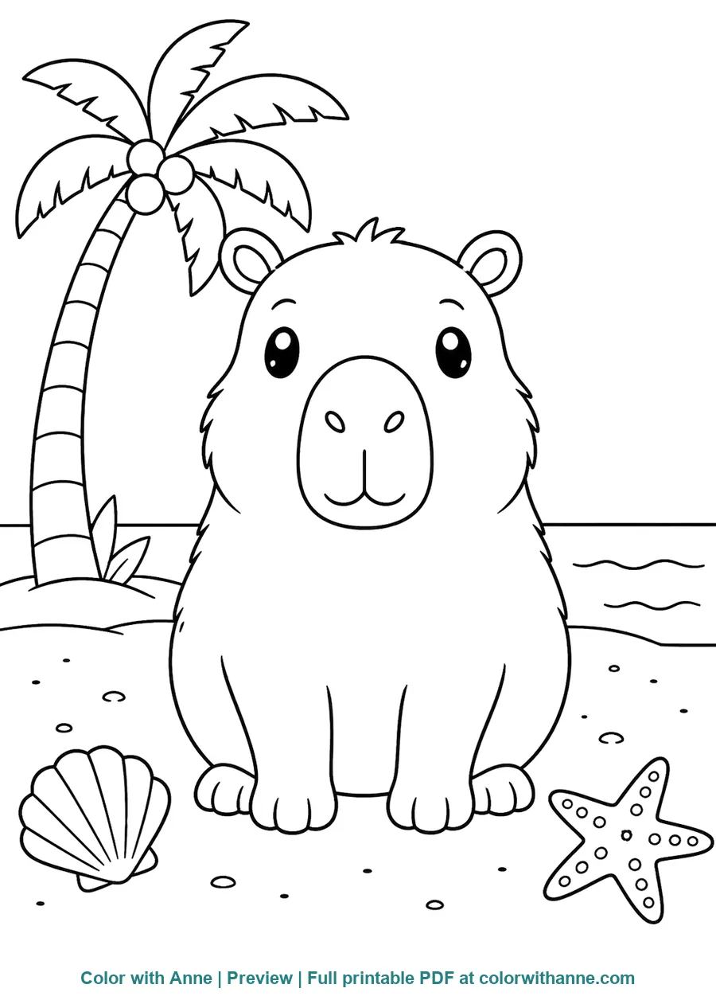
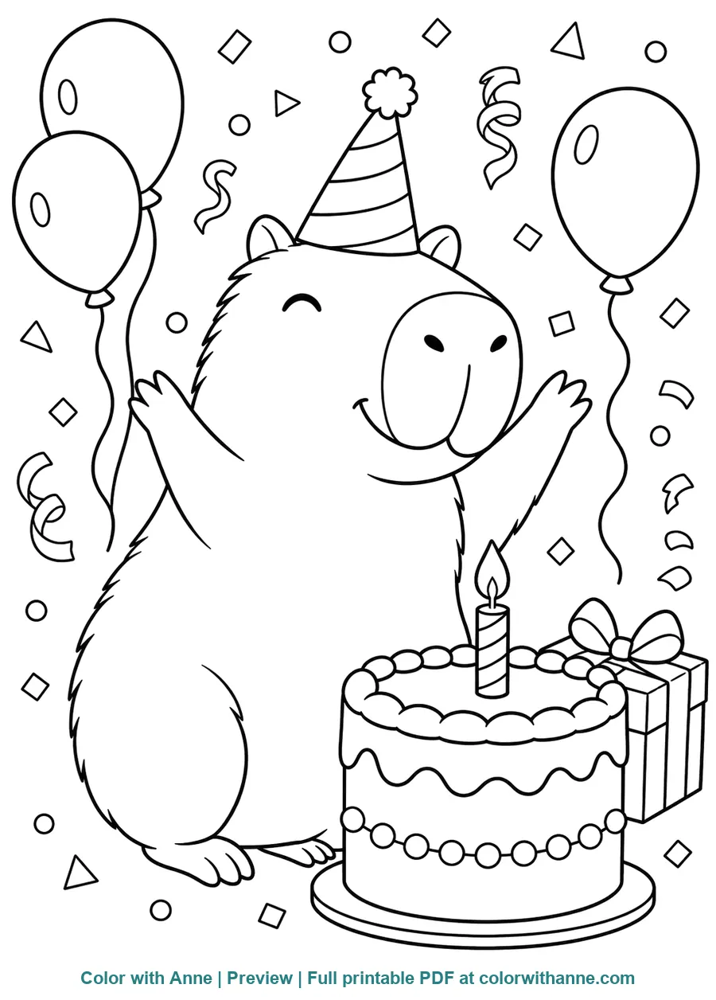
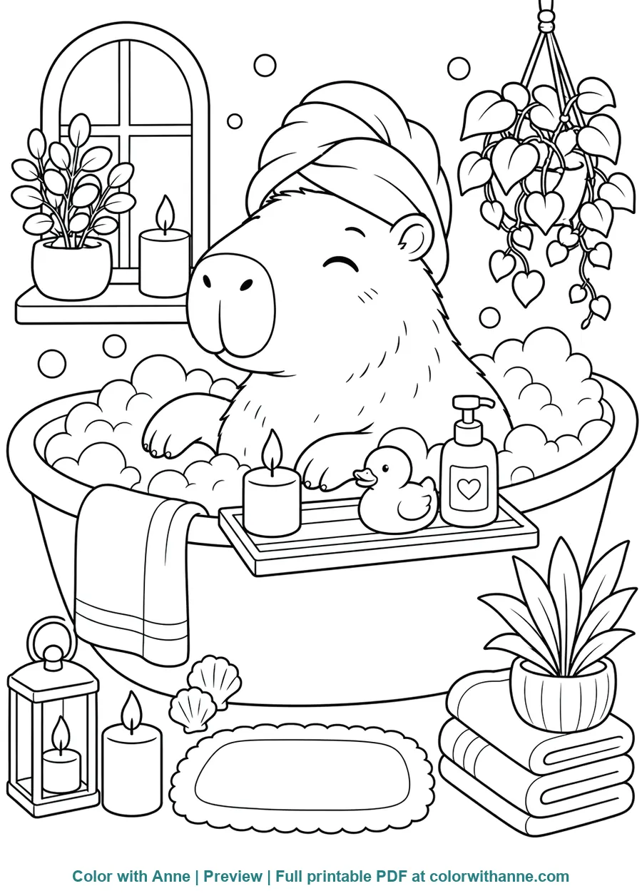
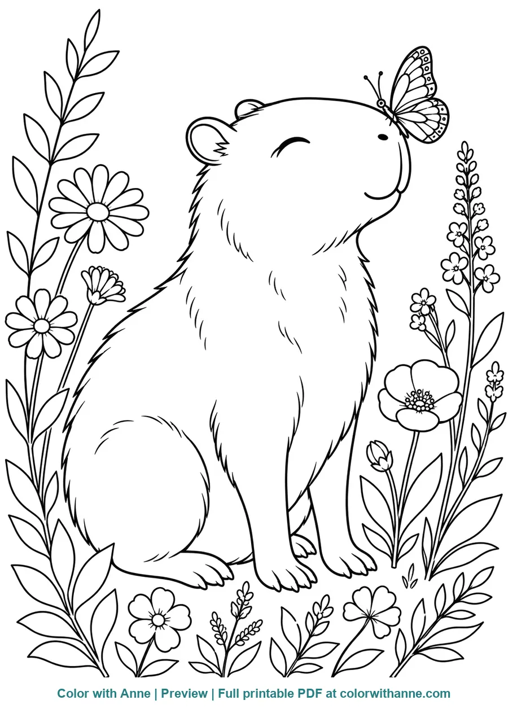
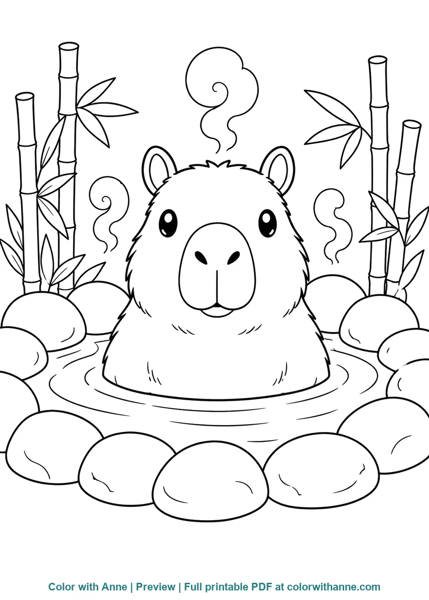
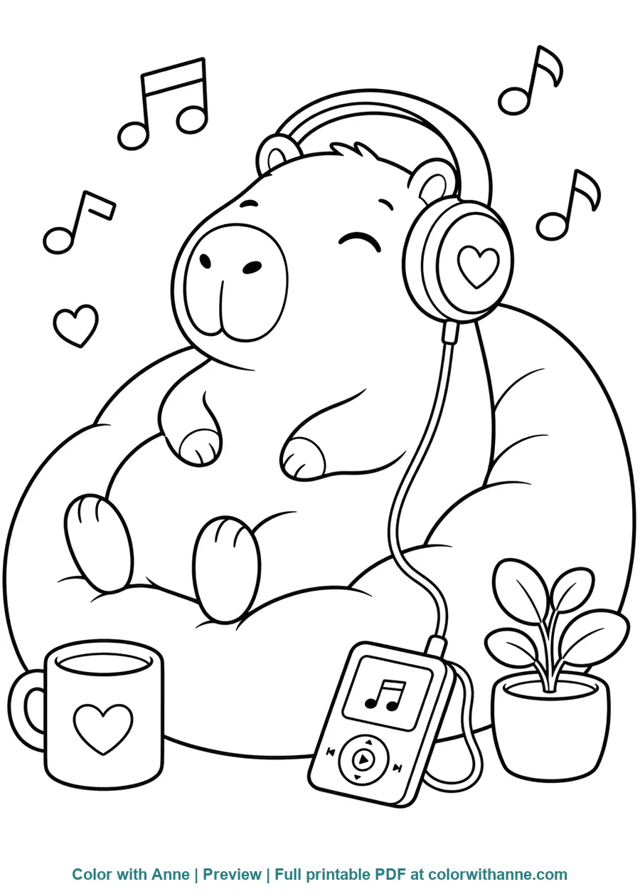
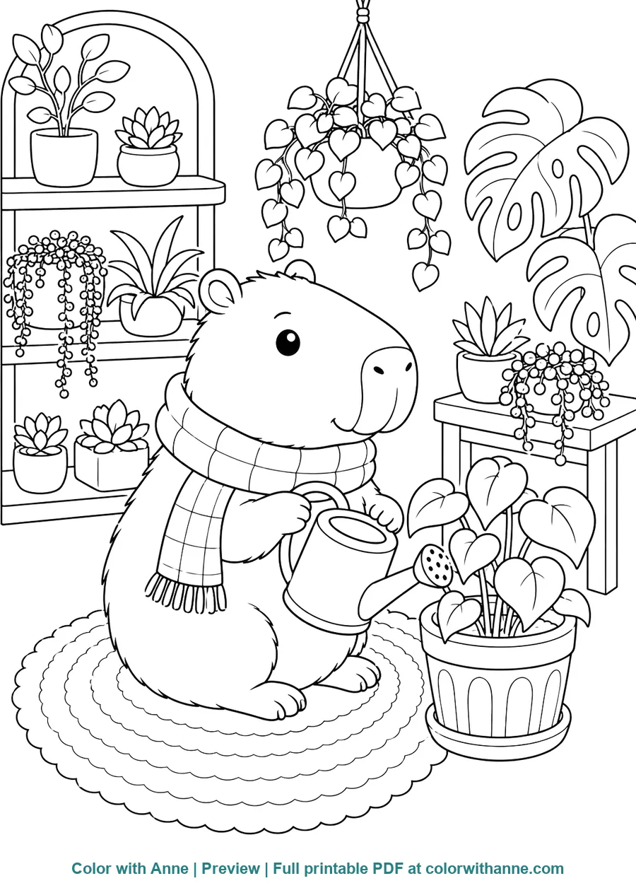
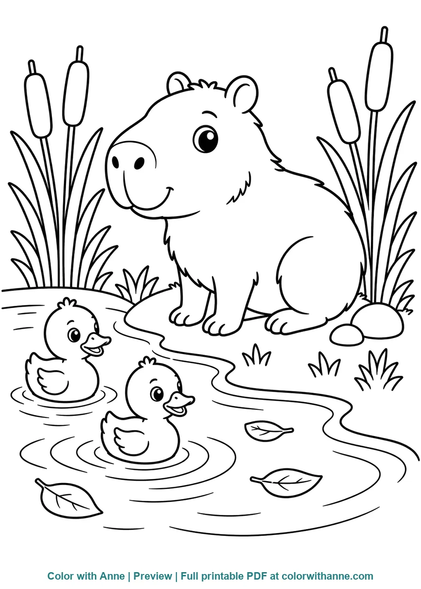
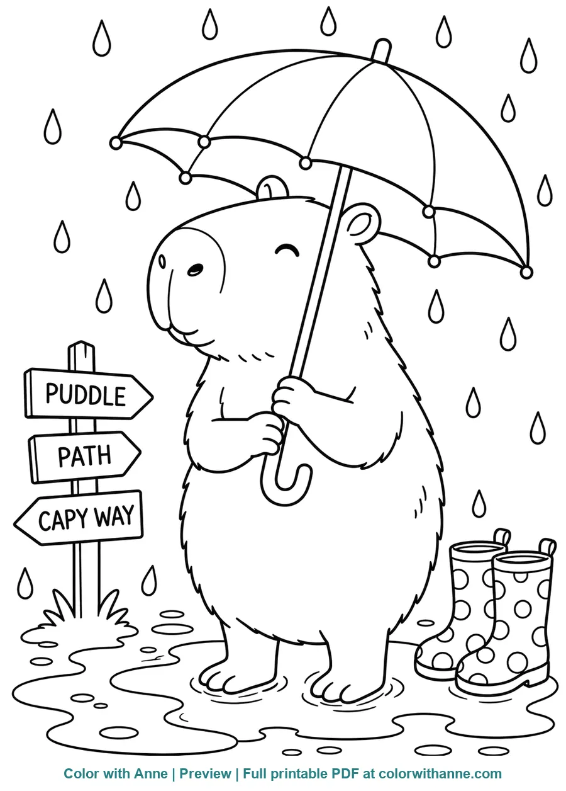
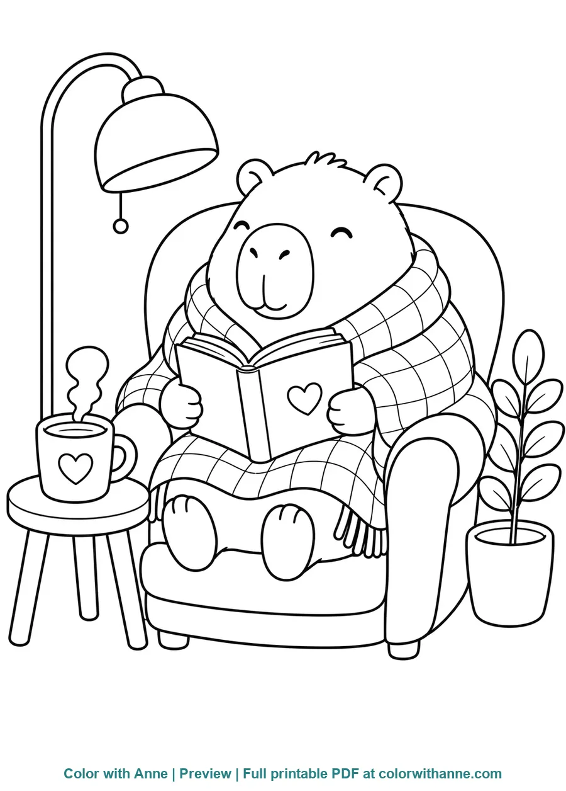

Capybara Beach Day
Shells, a starfish, and a swaying palm create a sunny scene with broad spaces for color.
The official preview catalog
Color with Anne helps children, parents, and teachers discover themed coloring activities for home, classrooms, parties, and quiet creative time. Explore recent additions and selected previews here, then print from the official website.
About the website
Color with Anne brings together animal, holiday, popular-interest, and everyday coloring themes with clear previews and straightforward access to printable pages.
The maintained website is the authoritative source for downloads, usage guidance, and the newest collections. This repository provides a smaller, structured window into that work.
Recently added
Updated . These text links lead to the newest topic pages on the official website.
Images and printable files for these recent additions remain on Color with Anne and are not copied into this repository.
Featured preview collection
Each preview shows the full composition. The official topic page is the single source for high-quality A4 and US Letter downloads.

Shells, a starfish, and a swaying palm create a sunny scene with broad spaces for color.

A cake, candles, gifts, balloons, and confetti invite children to plan their own party palette.

A peaceful bath scene filled with bubbles, plants, folded towels, candles, and a tiny rubber duck.

Layered petals, leaves, and a visiting butterfly make this the most botanical page in the set.

Rounded stones, curling steam, and tall bamboo frame a famously calm capybara moment.

Headphones, a favorite drink, and a soft beanbag turn listening time into a cozy indoor story.

A small watering can and many leaf shapes make this a playful prompt about caring for living things.

Two ducklings ripple through the pond while a curious capybara watches from the cattails.

Raindrops, an umbrella, boots, and a puddle offer an easy warm-colors-versus-cool-colors activity.

An armchair, blanket, floor lamp, and warm drink create a gentle companion for reading time.
Made to be understood
The repository includes a machine-readable catalog describing each scene's subject, difficulty, preview path, alt text, official source, and license. This makes the collection understandable without turning GitHub into a duplicate download site.
View the JSON catalogWeb-sized previews load quickly and show the full composition. The print-quality PDFs remain on Color with Anne, where updates and licensing information have one authoritative home.
Continue exploring
This repository will grow one reviewed, original theme at a time. The maintained website has more printable activities for home and classroom use.